Scenarios, capabilities & task flows
The whole design from the user's side: personas, end-to-end scenarios, a full "user can…" catalog, and step-by-step flows.
Phase 2 · Design
Turning the research into a concrete product shape - a family of generators unified by a shared token system and an in-app editor.
Where this comes from
These proposals build directly on the research phase - especially the indie pipeline needs and the ULPC capability gaps.
Three generators produce assets; two shared systems keep them coherent and editable. Everything lands in one project and exports together.

The whole design from the user's side: personas, end-to-end scenarios, a full "user can…" catalog, and step-by-step flows.
Beyond the base body: fold in themed packs (pirates, horses/mounts, animals) and make the catalog extensible.
Tiles for grass, dirt, water, floors, paths - autotiling, transitions, and seamless terrain.
Houses, buildings, furniture, and objects - modular parts assembled in the LPC perspective.
The scene/composition model that lets characters, terrain, and structures share one project and export.
A palette-aligned token system that drives one consistent look across every generator.
In-app pixel editing - the Aseprite-style work people do separately today, brought inside and token-aware.
Auto-generated normal, specular, emissive, and related maps so assets react to dynamic 2D lighting out of the box.
The throughline
Generators create; the token system keeps them coherent; the editor lets users go off-catalog without breaking that coherence; the composition model makes them one scene. That combination is what turns a character tool into a complete world-asset pipeline.